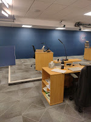
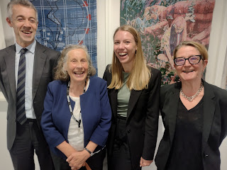
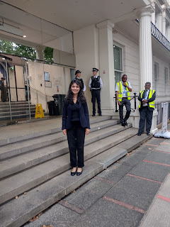

 |
| witness chair & lawyer's desk |
{kind=link}
Several people are arriving with suitcases. This is
the last day of hearings for Module 6 (social care) of the UK-COVID 19 Inquiry and
lawyers from across the UK are poised to hurry away to catch their trains or
planes home. Before they go they'll be offering their closing
submissions. These are summaries, responses,
reports, passionate pleas, objections, recommendations for the future. Some of the barristers are
speaking on behalf of the national governments and public health bodies who
need to defend – or at least explain – their actions, while possibly paying lip service to the need to ‘learn lessons’ for
the future. It’s not compulsory – the DHSC in England isn't bothering with an oral submission, though
the Welsh, Scottish and Northern Irish health departments are. Others (like us) are on the
attack, demanding recognition for those who died unnecessarily or in distress and for the survivors who were not able to support the people they loved at time of greatest
need. We are campaigning for change.
It's all conducted in a formal style. The lawyers wear black. We are silent and stand up when Lady Hallett, the Chair of the Inquiry comes in. She has great authority. I wish you’d been here when she forced former Secretary of State for Health, Matt Hancock, into silence and acknowledgement, simply by holding his gaze and staring him down.
Our confrontations are muted. There's no direct attack from one
party on another, all our submissions (key word) are directed at the Chair. Only she has the power to consider all that has been said and decide what she will
recommend in her final report to make improvements in the future. Everyone sticks to their allotted
time, they garnish their speeches with ‘My Lady’ and terms of respect and
gratitude.
Behind the scenes, over the many months it has taken to
reach this moment, it hasn’t been quite like that. We, that is the Core
Participants (the people who allege mishandling of the Covid-19 pandemic in
social care and those who deny it) and the lawyers who represent us, have been
engaged in a process of negotiation with the other set of lawyers who represent the Inquiry.
They set the rules – what are the topics that need to be discussed, what
evidence will be collected, who will come and sit in the Inquiry chair and
answer questions publicly. We do our best to provide what they require, while agitating
for particular witnesses to be called, certain topics given extra time and
grumbling when we believe there are gaps, people who should have been called
but are not there, additional time that should have been given but has been
denied.
This module – investigating what happened to the more than 300,000 people
who died in UK care homes between March 2020 and the end of January 2022 and also
the many others who died at home (a rise of over a third on normal figures) –
has been called the Ground Zero of the Inquiry, the heart of its investigation –
though those of us who also participated in the two months of hearings into the NHS last autumn (Module
3) continue to assert that hospitals were given more intense and detailed scrutiny by the Inquiry, greater weight, as they were in the pandemic itself.
It's been an exhausting as well as (we hope) an exhaustive process.
Some of the 160 witness statements we (or our lawyers) have been asked to read
are 200-300 pages long. Those are usually the one with most to self-justify
and the least of interest. In addition there have been 200,000 pages
of back up documents, proving the truth (we hope) of what the witness statements say.
In stark contrast are the impact films, which have used just a tiny fraction of the testimonies supplied by members of the public to Every Story Matters (46,000 contributions for module 6). These have opened each module of the Inquiry and are intended to ensure that the formal proceedings remain grounded in lived experience. https://covid19.public-inquiry.uk/commemoration/impact-films/#section_9_module-6
The most emotionally compelling evidence has come from those ordinary people who had been directly affected, who have sat in the Inquiry chair to be questioned by the CTI (counsel to the Inquiry). The previous day (July 30th) had been especially harrowing. A professor of palliative care had been examined on the numbers of excess deaths outside hospitals and the circumstances of those deaths: the lack of available oxygen, the non-supply of end-of-life medications, the absence of trained specialists, the refusals to admit sick people from their homes or care homes into hospitals for treatment. After he had spoken, a bereaved relative from each of the four nations had described exactly what it had been like for them. ‘A very long and difficult day,’ commented Lady Hallett as she adjourned proceedings.
This final day felt different. There was nothing more to be done now except listen to the lawyers deliver their speeches, then go home. There would also be lengthy written submissions to complete by autumn but that felt a while away. As we waited for the morning session to begin we chatted about our summer holidays, agreed to take a photo of ourselves, planned to meet for a meal sometime.But when Claire Mitchell KC, advocate for the Scottish Covid
Bereaved Families for Justice got up to start this final day’s proceedings, all sunny thoughts
were banished and we remembered, once again, why we were here. She didn't just set out the facts and arguments, she demanded
accountability. Not just 'lessons learned' but for
those who had been in power to take direct, uncomfortable, responsibility for their acts and omissions.
In their opening submissions for this hearing,
the bereaved noted that, for many of their number, this module was of
particular importance. Their loved ones who died cannot raise their voices, so
the bereaved seek truth and accountability on their behalf.
The bereaved are grateful to the Chair and all
at Dorland House for all that they have done to help the bereaved discover the
truth.
Accountability, however, requires an
acceptance and an assumption of responsibility for decisions made and actions
taken by the decision makers themselves. The bereaved consider that it is the
professional, moral and ethical duty of those who were in positions of power
during the pandemic to take responsibility for their acts and omissions.
The bereaved have listened as witnesses sought to evade accountability for their decisions. While some may consider it acceptable to say they cannot recall key decisions and processes because of the passage of time, the bereaved do not have the luxury of saying it was a long time ago. The passage of time does not dim their memories or diminish the accountability of others.
Outside her lawyer day job, Claire Mitchell has recently co-authored (with Zoe Venditozzi) How to Kill a Witch, an investigation into the historic and appalling miscarriages of justice in Scotland’s c17th witch trials. Their joint campaign achieved an apology from the Scottish government, specifically for the Witchcraft Act of 1563.
{kind=link}
Must this be so? By the law of the economic jungle, the old and disabled are the first to be discarded by the herd. The then PM, Boris Johnson, was reliably reported (by the chief scientific officer, Sir Patrick Vallance) to be ‘obsessed’ with older people ‘accepting their fate’ and letting the younger people get on with life. He's said to have described Covid as 'Nature's way' of getting rid of the old and vulnerable. (His mother died in a care home in the later pandemic period, though not from Covid-19. I've often wondered whether this modified his view.)
What actually happened, on his watch, was that people
living in residential or nursing homes -- or older and disabled people being cared for at home -- were initially left unprotected (forgotten by the Coronavirus Act, no testing or personal protective equipment
or even helpful advice for them or their carers). Then infection was potentially seeded into care homes when other older people were discharged untested
from hospitals into them. Many professionals such as GPs, district
nurses and care inspectors stayed away. Family carers were banned. Care home staff were overladen
with responsibilities (such as palliative care for the dying) for which they had not been
trained -- and for which resources were often in short supply. And crucially these older and disabled people and their families were
debarred from making any individual choices about what risks they might choose
to take, and the way they might decide to conduct their lives – or face their deaths. Not only in the first critical weeks but generally over the next two years. As Lady
Hallett said, the impact of the pandemic on them was ‘devastating’ -- did it
have to be like that?
What these
five weeks of Module 6 have shown, above all, is the known -- and accepted! – inadequacy of UK adult social care provision.
A sector which is a chaotic maze of private, local authority and charity
providers, where domestic carers are paid by the minute, where the profits of
some of the biggest providers go to offshore funds, where workers are often on
zero hours contracts with no statutory sick pay and which very often depend on
the labour of the most exploited workers (including undocumented migrants).
Official after official, testifying to the Inquiry exonerated themselves by saying
the system was already 'fragile' and it was all too difficult. Their apathy was astounding. If the Inquiry has
shown anything, it has shown that we must have real change, for all our sakes, as we
all, inevitably become older and less able.
I went home,
thoughtfully, wondering whether all that we had learned during our five weeks
at Dorland House might actually represent Ground Zero for Adult Social Care in the
UK? One of the more outspoken witnesses, a whistleblower from the DHSC,
described what had happened (the 27,000 excess deaths in the first pandemic
wave) as a ‘generational slaughter’. Had the incompetencies, the ignorance, the
unreflective callousnesses and the chaos, which we had collectively exposed,
been enough to clear this ground and assert an imperative for change in adult social care? Or will we
just muddle on leaving future generations to look back with incredulity that we took so little notice. Perhaps someone like Claire Mitchell, will write a book about it -- in a few centuries time.
This was the submission from Johns Campaign, Care Rights UK and the Patients Association on 31.7.2025 https://johnscampaign.org.uk/
Involvement with the Covid Inquiry has been an extraordinary period in my life and I'd like to include a photos of those who were there on the last day. If we're grinning inanely it's only with the relief of tension, not that we haven't taken this seriously.
 |
| Barrister Adam Straw, (me), Solicitors Carolin Ott and Emma Jones |
{kind=link}
 |
| Paralegal, Heidi Pathak, leaving Dorland House |
{kind=link}